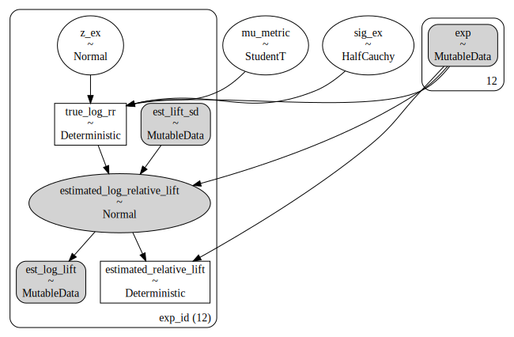
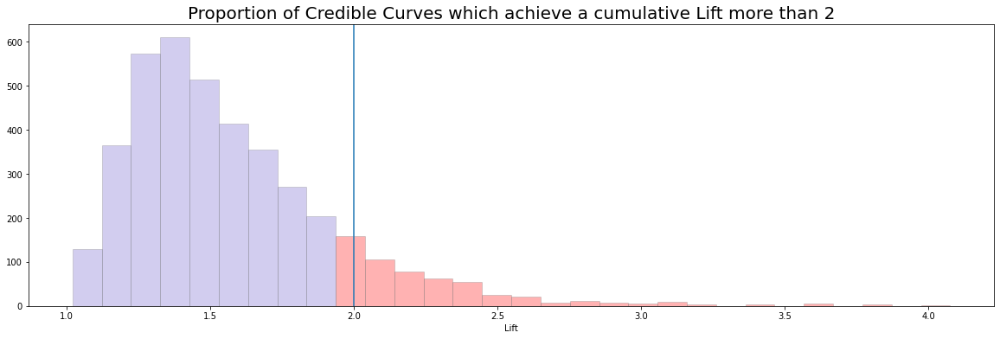

Modelling Improvement as Lift across Pooled Experiments
Author
Nathaniel Forde
import pymc as pmimport bambi as bmbimport pandas as pdimport arviz as azfrom bambi.plots import plot_capimport matplotlib.pyplot as pltimport numpy as npfrom scipy import stats
Running cells with 'Python 3.9.6 ('blog_env')' requires ipykernel package.
Run the following command to install 'ipykernel' into the Python environment.
Command: 'conda install -n blog_env ipykernel --update-deps --force-reinstall'
It’s useful fact that the Lift measurement of success can be more nicely modelled under a log transform. In this analysis we’ll follow the example in Demetri’s blog: https://dpananos.github.io/posts/2022-07-20-pooling-experiments/ and demonstrate how we can pool information across seperate experiments. In particular we’ll see why this type of modelling is apt for planning expected amount of cumulative gains over successive experiments. First observe how the Lift measurement can can be transformed to facilitate modelling.
The original data was modelled in the Stan probabilistic programming language. We’ll use this opportunity to translate the code into a pymc implementation.
In the scenario we have 12 seperate experiments with 50,000 units on either arm of the experiment. The were desigined to detect conversion in the arm of each trial. Only four of the experiments were successful in the sense that they showed a positive lift distinguishable from statistical noise under a 5% p-value threshold. Management wishes to achieve a total Lift of 2x over the next year. We want to determine how plausible that goal is given our track record so far.
We want to pool the information across our 12 experiments and to do so we model them hierarchically as a draws from an overarching normal distribution. The assumptions means we have to set priors on the shape of our parameters. We allow the hierarchical Normal distribution be configured with a centre of mass drawn from the StudentT distribution ensuring that we can have heavy tails in the distribution to account for outlier experiments with massive returns. The code and structure of the model are displayed below:
with pm.Model() as model:passmodel.add_coord('exp_id', list(range(12)), mutable=True)with model: exp_id = pm.MutableData("exp", list(range(12)))# Priors for the Hierarchical Log Lift Distribution mu_metric = pm.StudentT('mu_metric', mu=0, sigma=2.5, nu=3) sig_ex = pm.HalfCauchy('sig_ex', 0.01)# Priors for the Individual effects for each experiment z_ex = pm.Normal('z_ex', 0, 1, dims='exp_id')# Convenience wrappers for inputting fresh data est_lift_sd = pm.MutableData('est_lift_sd', df_pooling['estimated_sd_relative_lift'], dims='exp_id') est_log_lift = pm.MutableData('est_log_lift', df_pooling['estimated_log_relative_lift'], dims='exp_id')## pooling the indivdual experiemnts, ensuring shrinkage to the overall mean true_log_rr = pm.Deterministic('true_log_rr', mu_metric + z_ex[exp_id]*sig_ex, dims='exp_id')## Likelihood model for Logged Lift using observed values estimated_log_relative_lift = pm.Normal("estimated_log_relative_lift", mu=true_log_rr[exp_id], sigma=est_lift_sd[exp_id], observed=est_log_lift, dims="exp_id") estimated_relative_lift = pm.Deterministic('estimated_relative_lift', pm.math.exp(estimated_log_relative_lift[exp_id]), dims='exp_id')
pm.model_to_graphviz(model)

The Estimation Step
In the Bayesian workflow we sample both the priors, the prior predictive and posterior_predictive distributions. These allow us to assess model fit and the degree to which our model captures the observed data.
Sampling 4 chains for 1_000 tune and 1_000 draw iterations (4_000 + 4_000 draws total) took 26 seconds.
INFO:pymc:Sampling 4 chains for 1_000 tune and 1_000 draw iterations (4_000 + 4_000 draws total) took 26 seconds.
There was 1 divergence after tuning. Increase `target_accept` or reparameterize.
ERROR:pymc:There was 1 divergence after tuning. Increase `target_accept` or reparameterize.
There were 6 divergences after tuning. Increase `target_accept` or reparameterize.
ERROR:pymc:There were 6 divergences after tuning. Increase `target_accept` or reparameterize.
There were 11 divergences after tuning. Increase `target_accept` or reparameterize.
ERROR:pymc:There were 11 divergences after tuning. Increase `target_accept` or reparameterize.
There were 3 divergences after tuning. Increase `target_accept` or reparameterize.
ERROR:pymc:There were 3 divergences after tuning. Increase `target_accept` or reparameterize.
/Users/nathanielforde/Documents/Gitlab/async_research_club/.venv/lib/python3.9/site-packages/arviz/stats/diagnostics.py:586: RuntimeWarning: invalid value encountered in double_scalars
(between_chain_variance / within_chain_variance + num_samples - 1) / (num_samples)
mean
sd
hdi_3%
hdi_97%
mcse_mean
mcse_sd
ess_bulk
ess_tail
r_hat
mu_metric
0.083
0.018
0.050
0.118
0.000
0.000
4133.0
2445.0
1.0
z_ex[0]
0.041
0.987
-1.774
1.968
0.014
0.017
4873.0
2808.0
1.0
z_ex[1]
-0.088
0.995
-2.017
1.718
0.014
0.017
5093.0
2906.0
1.0
z_ex[2]
-0.037
0.971
-1.795
1.796
0.014
0.016
4757.0
3008.0
1.0
z_ex[3]
-0.079
1.011
-1.973
1.788
0.014
0.017
4925.0
2573.0
1.0
z_ex[4]
0.046
0.974
-1.860
1.815
0.013
0.016
5477.0
2826.0
1.0
z_ex[5]
0.041
0.994
-1.815
1.892
0.015
0.019
4581.0
2276.0
1.0
z_ex[6]
-0.003
0.965
-1.727
1.879
0.015
0.016
4196.0
2759.0
1.0
z_ex[7]
0.165
0.987
-1.713
1.959
0.015
0.017
4426.0
2569.0
1.0
z_ex[8]
-0.183
0.992
-2.046
1.649
0.014
0.016
4770.0
2848.0
1.0
z_ex[9]
0.077
0.998
-1.664
2.037
0.014
0.017
4990.0
2714.0
1.0
z_ex[10]
0.115
0.998
-1.752
1.988
0.014
0.018
5001.0
2612.0
1.0
z_ex[11]
-0.082
0.997
-1.909
1.840
0.015
0.018
4634.0
2564.0
1.0
sig_ex
0.010
0.010
0.000
0.027
0.000
0.000
2690.0
1933.0
1.0
true_log_rr[0]
0.084
0.021
0.046
0.126
0.000
0.000
4049.0
2457.0
1.0
true_log_rr[1]
0.082
0.021
0.042
0.121
0.000
0.000
3788.0
2655.0
1.0
true_log_rr[2]
0.083
0.022
0.042
0.123
0.000
0.000
4097.0
2861.0
1.0
true_log_rr[3]
0.082
0.022
0.040
0.121
0.000
0.000
3632.0
2416.0
1.0
true_log_rr[4]
0.084
0.021
0.044
0.123
0.000
0.000
4032.0
2419.0
1.0
true_log_rr[5]
0.084
0.022
0.042
0.124
0.000
0.000
4236.0
2668.0
1.0
true_log_rr[6]
0.083
0.021
0.045
0.123
0.000
0.000
3702.0
2731.0
1.0
true_log_rr[7]
0.086
0.022
0.043
0.126
0.000
0.000
4035.0
2712.0
1.0
true_log_rr[8]
0.080
0.022
0.040
0.121
0.000
0.000
3619.0
2592.0
1.0
true_log_rr[9]
0.085
0.022
0.042
0.123
0.000
0.000
3831.0
2801.0
1.0
true_log_rr[10]
0.085
0.022
0.045
0.124
0.000
0.000
3814.0
2450.0
1.0
true_log_rr[11]
0.082
0.022
0.043
0.124
0.000
0.000
3962.0
2829.0
1.0
estimated_relative_lift[0]
1.120
0.000
1.120
1.120
0.000
0.000
4000.0
4000.0
NaN
estimated_relative_lift[1]
1.041
0.000
1.041
1.041
0.000
0.000
4000.0
4000.0
NaN
estimated_relative_lift[2]
1.077
0.000
1.077
1.077
0.000
0.000
4000.0
4000.0
NaN
estimated_relative_lift[3]
1.051
0.000
1.051
1.051
0.000
0.000
4000.0
4000.0
NaN
estimated_relative_lift[4]
1.098
0.000
1.098
1.098
0.000
0.000
4000.0
4000.0
NaN
estimated_relative_lift[5]
1.108
0.000
1.108
1.108
0.000
0.000
4000.0
4000.0
NaN
estimated_relative_lift[6]
1.077
0.000
1.077
1.077
0.000
0.000
4000.0
4000.0
NaN
estimated_relative_lift[7]
1.162
0.000
1.162
1.162
0.000
0.000
4000.0
4000.0
NaN
estimated_relative_lift[8]
0.996
0.000
0.996
0.996
0.000
0.000
4000.0
4000.0
NaN
estimated_relative_lift[9]
1.134
0.000
1.134
1.134
0.000
0.000
4000.0
4000.0
NaN
estimated_relative_lift[10]
1.140
0.000
1.140
1.140
0.000
0.000
4000.0
4000.0
NaN
estimated_relative_lift[11]
1.056
0.000
1.056
1.056
0.000
0.000
4000.0
4000.0
NaN
Simulate Draws from the Posterior and Calculate Lift
The Stan implementation has the functionality to enable the calculation of generated quantities on the fly within a model run. We need to replicate that functionality outside of our model making use of the estimated posterior distributions on the model parameters. We calculate the effect size engendered by an observed difference in proportions of conversion across the experiments, then calculate whether the simulated was large enough that we had the power to detect it against a baseline of 1% conversion. The quantities are used to define the amount of detected lift in our posterior distribution. This in turn can be used to project the amount of cumulative lift we will see over 12 experiments.
generated_quanties = []for i inrange(12): generated_data = pd.DataFrame({'mu_metric': idata['posterior']['mu_metric'].values,'sig_ex': idata['posterior']['sig_ex'].values } ) generated_data['log_rr_over_the_year'] = generated_data.apply(lambda x: np.random.normal(x['mu_metric'], x['sig_ex'], 1)[0], axis=1) generated_data['rr_over_the_year'] = np.exp(generated_data['log_rr_over_the_year'])## Calculate effect size for proportions against base 0.01 generated_data['es'] = generated_data.apply(lambda x: 2*np.arcsin(np.sqrt(x['rr_over_the_year'] *0.01)) -2*np.arcsin(np.sqrt(0.01)), axis=1)## Calculate power based on difference from baseline with known sample size generated_data['power'] = generated_data.apply(lambda x: 1- stats.norm.cdf( 1.644854- x['es'] * np.sqrt(50_000/2), 0, 1), axis=1)## Weight lift by our ability to detect given power in experiment generated_data['detected_lift'] = generated_data['power']* np.log(generated_data['rr_over_the_year']) generated_data['experiment'] = i generated_data['draw'] = generated_data.index generated_quanties.append(generated_data)forecast_df = pd.concat(generated_quanties)forecast_df
mu_metric
sig_ex
log_rr_over_the_year
rr_over_the_year
es
power
detected_lift
experiment
draw
0
0.053614
0.003751
0.054232
1.055729
0.005526
0.220312
0.011948
0
0
1
0.089769
0.006848
0.078595
1.081766
0.008058
0.355404
0.027933
0
1
2
0.082105
0.008848
0.075538
1.078464
0.007739
0.336777
0.025440
0
2
3
0.076757
0.031000
0.098424
1.103431
0.010142
0.483548
0.047593
0
3
4
0.076757
0.031000
0.081759
1.085194
0.008389
0.375086
0.030667
0
4
...
...
...
...
...
...
...
...
...
...
3995
0.102766
0.012876
0.118111
1.125369
0.012232
0.613782
0.072494
11
3995
3996
0.066032
0.000387
0.065700
1.067907
0.006714
0.279849
0.018386
11
3996
3997
0.062600
0.007694
0.067979
1.070343
0.006951
0.292589
0.019890
11
3997
3998
0.090900
0.005162
0.103968
1.109565
0.010729
0.520525
0.054118
11
3998
3999
0.064391
0.010588
0.065984
1.068209
0.006743
0.281419
0.018569
11
3999
48000 rows × 9 columns
Generate Cumulative Lift Curves for N-Experiments
We can now line up the draws for each of our experiments and calculate the cumulative lift by taking the cumulative sum and then exponentiating to return us to the raw Lift scale.
draws_per_experiment = forecast_df.pivot('experiment', 'draw', 'detected_lift')## Probability of Independent events sum on the log scaledraws_per_experiment = np.exp(draws_per_experiment.cumsum()).Tdraws_per_experiment
experiment
0
1
2
3
4
5
6
7
8
9
10
11
draw
0
1.108264
1.184080
1.270116
1.344759
1.382252
1.493910
1.574159
1.636984
1.770258
1.896812
2.051490
2.125217
1
1.111839
1.173511
1.255733
1.316744
1.336851
1.431039
1.513762
1.624544
1.733171
1.984078
2.259019
2.370773
2
1.019156
1.058173
1.080910
1.120521
1.163374
1.190512
1.231332
1.257548
1.287433
1.320996
1.347873
1.399662
3
1.027886
1.062590
1.088567
1.124628
1.149337
1.189305
1.218267
1.258150
1.290688
1.328989
1.368187
1.412470
4
1.022567
1.037980
1.046979
1.064810
1.079649
1.086973
1.094045
1.097738
1.104774
1.108017
1.125943
1.132601
...
...
...
...
...
...
...
...
...
...
...
...
...
3995
1.022991
1.064212
1.091823
1.118289
1.166716
1.182341
1.208105
1.252252
1.310564
1.319768
1.351317
1.375962
3996
1.039176
1.084013
1.129208
1.178795
1.230675
1.283502
1.337933
1.395778
1.451701
1.512018
1.576763
1.643312
3997
1.022346
1.057272
1.118954
1.183094
1.205393
1.225715
1.343847
1.407721
1.506250
1.565272
1.670593
1.755775
3998
1.037186
1.077082
1.122035
1.166914
1.206876
1.252481
1.300103
1.352597
1.397989
1.453273
1.510253
1.565866
3999
1.026173
1.057943
1.072373
1.120320
1.155082
1.198584
1.220144
1.246629
1.275155
1.311698
1.351460
1.378449
4000 rows × 12 columns
Plotting Predicted Trajectories
Note how there are cumulative lift curves that go up and down due to the possibility of failed experiments. We plot here a a sample of 100 possible curves along with the key quantiles.
We can now also ask how credible a target lift of 2x over the course of 12 experiments really is?
fig, ax = plt.subplots(figsize=(20, 6))N, bins, patches = ax.hist(draws_per_experiment[11], color='slateblue', edgecolor='grey', alpha=0.3, bins=30);ax.axvline(2)for i inrange(9, len(patches)): patches[i].set_facecolor('red')ax.set_title("Proportion of Credible Curves which achieve a cumulative Lift more than 2", fontsize=20)ax.set_xlabel("Lift")
Text(0.5, 0, 'Lift')

Generate new views with new Experimental data
We can make use of PYMC’s mutable data input to feed in new experimental data and try and predict implied effects using the posterior predictive distribution. We will continue to assume that we have 50,000 observations per experiment on each arm. But now let’s assume we have 20 experiments, with a similar pattern of Lift observed on each of the experiments.
predicted['rr_over_the_year'] = np.exp(predicted['estimated_log_relative_lift'])## Calculate effect size for proportions against base 0.01predicted['es'] = predicted.apply(lambda x: 2*np.arcsin(np.sqrt(x['rr_over_the_year'] *0.01)) -2*np.arcsin(np.sqrt(0.01)), axis=1)## Calculate power based on difference from baseline with known sample sizepredicted['power'] = predicted.apply(lambda x: 1- stats.norm.cdf( 1.644854- x['es'] * np.sqrt(50_000/2), 0, 1), axis=1)## Weight lift by our ability to detect given power in experimentpredicted['detected_lift'] = predicted['power']* np.log(predicted['rr_over_the_year'])predicted
fig, axs = plt.subplots(1, 2, figsize=(20, 6))np.random.seed(19)axs = axs.flatten()N, bins, patches = axs[0].hist(np.exp(predicted_curves.cumsum(axis=1))[11], color='slateblue', edgecolor='grey', alpha=0.3, bins=40);axs[0].axvline(2)for i inrange(1, len(patches)): patches[i].set_facecolor('red')ax.set_title("Proportion of Credible Curves which achieve a cumulative Lift more than 2", fontsize=20)ax.set_xlabel("Lift")axs[0].set_title("Proportion of Curves which achieve 2x Lift after 20 experiments")axs[0].legend()axs[1].plot(np.exp(predicted_curves.cumsum(axis=1)).sample(100).T, color='grey');axs[1].plot(np.exp(predicted_curves.cumsum(axis=1)).mean(), color='red', label='Expected Growth curve');axs[1].set_title("Sample Set of Possible Growth Curves")axs[1].set_ylim(0, 10)
WARNING:matplotlib.legend:No artists with labels found to put in legend. Note that artists whose label start with an underscore are ignored when legend() is called with no argument.